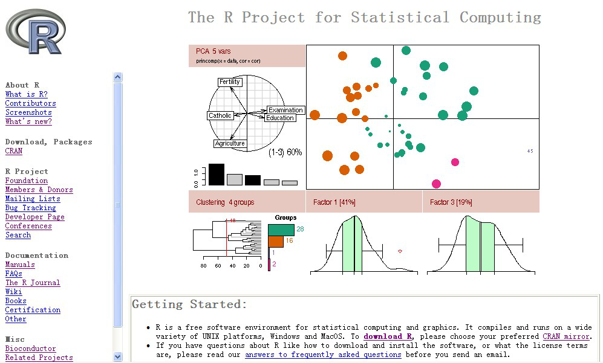
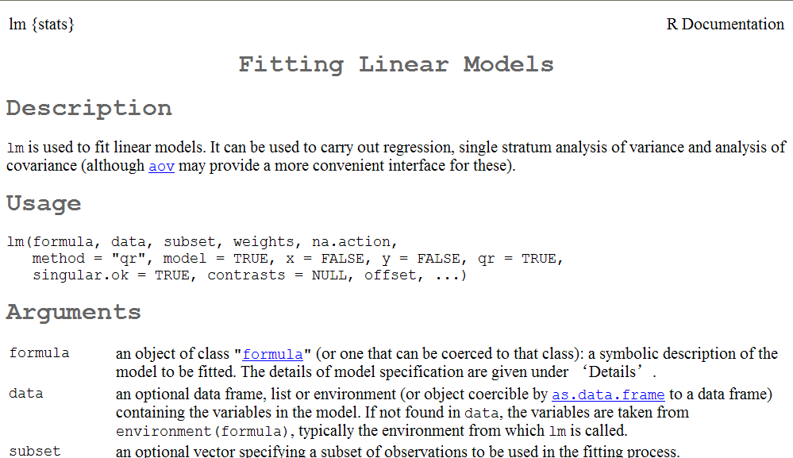
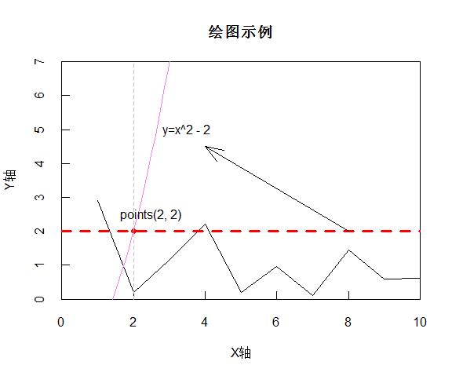
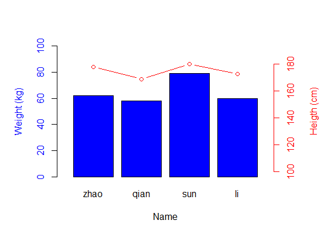
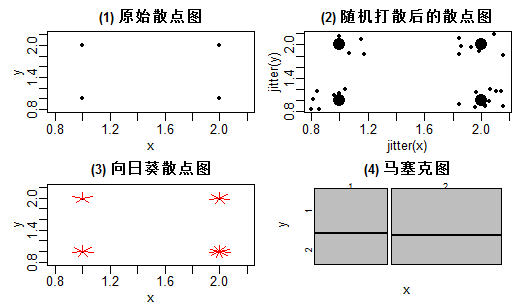

name: inverse layout: true theme: mytheme.css class: center, middle, inverse --- ## R Simple 教程 <p> </p> 作者：@赖 韬 邮箱：laitaot@126.com 2015 年 04月 25日 --- layout: false ### 简介 <img src="img/myintr.png" width = "750"> --- template: inverse ## 第一部分 ### R环境搭建 --- layout: false ## 一、R简介 - 由奥克兰大学统计学系的 Ross Ihaka 和 Robert Gentleman 共同创立 - 开源，强大的统计分析和绘图功能 - 有效的数据处理和保存机制 - 完整的数组和矩阵计算操作符 - 连贯而又完整的数据分析工具 - 图形工具可以对数据直接进行分析和展示 - Knitr和shiny实现了强大的数据可视化及自动化报告功能 - 同时兼具**面向过程式**编程与**面向对象式**编程 - CRAN:R**综合档案网**和**程序库** - 让使用者容易从CRAN下载、安装、更新及管理R模块 --- layout: false ## 二、安装R #### 1.1获取R： Windows 安装开发环境： 1. [R.exe:http://mirror.bjtu.edu.cn/cran/](http://mirror.bjtu.edu.cn/cran/) 2. [RStudio.exe:https://www.rstudio.com/](https://www.rstudio.com/) #### 1.2安装CRAN上的模块： ``` #1、打开RStudio #2、直接使用RStudio安装或使用install命令安装模块 install.packages("packagename") #remove. packages("packagename") #update. packages("packagename") #library(devtools) install_github("packagename") #install_version("packagename", version="0.6.2") ``` 安装R commander(不是必须的) 对初学者有帮助，随着用户图形界面的操作，显示出相应的R代码 ``` install.packages("Rcmdr") library(Rcmdr) ``` --- layout: false 升级R版本 ``` install.packages("installr") require(installr) updateR() ``` 在TOOLS-options-general选项里可选择32位还是64位系统 R软件首页 [http://www.r-project.org/](http://www.r-project.org/)  --- layout: false #### 1.3如何获取帮助 | 项目 | 翻译 | 项目 | 翻译 | |:-----------|:----------|:---------|:-----| | lm{stats} | #函数名及所在包 | Details | #详情 | | Fitting Linear Models | #标题 | Author(s) | #作者 | | Description | #函数描述 | References | #参考文献 | | Usage | #默认选项 | Examples | #举例 | | Arguments | #参数 | | | ``` ?lm #help("lm") #help.search("lm") #apropos("app")#applay() ``` ?fun或help(fun)  --- layout: false #### 1.4加载已安装包 当 R 启动后，R在内存中会自动加载若干包；如果使用从CRAN上额外安装的包，应用library()加载。 ``` library("packagename") ``` #### 1.5使用R内置的数据集 R 在 datasets 包中共提供了 100 个可以使用的数据集，这些数据集都可以通过 data() 函数加载入 内存。 ``` dim(data()$results ) data()$results [ ,4] ``` #### 1.6R工作目录获取和设置 ``` getwd() setwd("library") ``` --- layout: false #### 1.7Rstudio查看demon ##### 查看哪些安装包附带有demon ``` demo(package = .packages(all.available = TRUE)) ``` ##### 查看dplyr中的demon的bench-set示例 ``` demo("bench-set", package = "dplyr", ask = TRUE) demo("sqldf-groupchoose", package = "sqldf", ask = FALSE) ``` --- template: inverse ## 第二部分 ### R基础语法 --- layout: false ## 一、语法 #### 1.1基本规则： - \#表示注释代码 - 一个语句一行，不换行时用分号来隔开不同命令语句 - 字符串连接符paste("a","b",sep="：")； - 使用<-或=作为赋值操作符 - 对象命名规则： - 不能用数字作为变量，对象也不能用数字开头，但是数字可以放在中间或结尾 - 建议不要用过短的名称。可以用”.”作为间隔 - 大小写敏感，A与a表示不同的变量 R用Inf和-Inf表示±∞；用NA(不可用)表示缺失值；用NaN(非数字)表示不是数字的值。 --- layout: false #### 1.2操作符： 当不确定优先顺序时，一定要用括号明确 ```` 算术运算符： 加、减、乘、除、乘幂、模、整除 + - * / ^ %% %/% -------------------------------------------------------------- 小于、大于、等于、小于等于、大于等于、不等于 比较操作符： < > == <= >= != -------------------------------------------------------------- 逻辑操作符： 或 与 非 异或 |\|| &\&& ! xor x|y x&y !x xor(x,y) ...... ```` #### 1.3输出结果： ``` print("Str") cat("Str\n") ``` --- layout: false #### 1.4数据类型： --- layout: false #### 1.5数据对象类别： --- layout: false #### 1.52因子: #### 1.53数组与矩阵 --- layout: false #### 1.54数据框 --- layout: false #### 数据框生成 将矩阵转换成数据框，as.data.frame(matrix) 读取外部数据生成数据框，用read.table()函数或read.csv()函数读取外部txt或csv格式的文件。 --- layout: false #### 数据框的简单应用 --- layout: false #### 1.55列表 --- layout: false #### 1.6控制结构： for、while和if #### 2.0函数function： --- layout: false #### 2.1R面向对象编程 **R6的类成员**，包括**属性**和**方法**2部分 ``` library(R6) #定义一个R6类 TimePay <- R6Class("TimePay", public=list( #公有属性 name=NA, initialize = function(name,pay){ self$name <- name private$pay <- pay }, #定义公有方法 Income = function(){ print(paste("你好",self$name)) print(paste("你本月工资:",private$pay)) } ), #私有属性 private=list(pay=NA) ) tp<-TimePay$new("Tianyv",4400) tp$Income() ``` 定义公有属性及方法用**public=list(属性,方法=function(){})**,私有用**private**; 访问公有用：self$属性，self$方法();访问私有用：private$属性，private$方法() --- layout: false **R6类的继承关系** ``` OverTimePay <- R6Class("OverTimePay", inherit = TimePay, public=list( day=NA, getday = function() self$day, setday = function(value) self$day <- value, Income = function(){ super$Income() print(paste("你本月加班天:",self$day)) overtime.pay=private$pay/22*3*self$day print(paste("加班工资:",overtime.pay)) } ) ) otp<-OverTimePay$new("Tianyv",4400) otp$setday(3) otp$Income() ``` 继承使用**inherit**；调用父类方法用**super$Fun()** --- template: inverse ## 第三部分 ### R绘图 --- layout: false #### 1.1常用低级绘图函数 #### 1.2绘图参数 --- layout: false #### 1.3绘图简单示例 ``` win.graph(6, 5) #xaxs="i",yaxs="i"控制侧坐标有无交点；tcl为正数时，刻度朝里 ...... ```  --- layout: false #### 1.4绘制双坐标图 ``` d <- data.frame(name=c("zhao","qian","sun","li"), weight=c(62,58,79,60),height=c(178,169,180,173)) ...... ```  --- layout: false #### 1.5一页多图 ``` par(mfrow = c(2, 2), mar = c(2.5, 3, 2, 0.1), pch = 20, mgp = c(1.5, 0.5, 0), cex.main = 1) ...... ```  --- template: inverse ## Q & A #### [返回Blog: tianyv.github.io](http://tianyv.github.io/train)